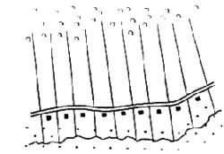
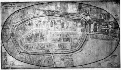

Schaumburg in the Middle Ages—Development of Basic Sturctures
 Die Schaumburg (aus dem Skizzenbuch von Wilhelm Busch)
Die Schaumburg (aus dem Skizzenbuch von Wilhelm Busch)Schema eines Hagenhufendorfes
Stadtplan von Stadthagen (Houpe-Plan)
In 1110, the Saxon Duke Lothar von Süpplingenburg, the future Emperor Lothar III. (Holy Roman Emperor from 1125-1137), granted the counties of Holstein and Stormarn to the noble Adolf von der Schaumburg. His origin is unknown; however, he will have been the builder of the Schaumburg [castle] after which he named himself. This is the first mention of the dynasty and the castle.
Adolf was supposed to defend the endangered Slavic border. However, he and his successors also colonized in East Holstein. Hamburg was expanded by Count Adolf I, and Lübeck by Count Adolf II in 1143. Kiel was rebuilt as a city by Adolf IV between 1233 and 1242. Plön, Eutin and Travemünde were founded under their leadership. Thus the Schaumburgs rose to become one of the most important families on the southern Baltic Sea. They became related by marriage to the kings of Sweden and Denmark, to the dukes of Saxe-Lauenburg, Brunswick-Lüneburg and Mecklenburg. One line became dukes of Schleswig. The common history of the state of Schleswig-Holstein and the district of Schaumburg is symbolically expressed in the coat of arms: the nettle leaf is as much a part of the coat of arms of Schleswig-Holstein as it is a symbol of the district of Schaumburg.
The Counts of Holstein-Schaumburg were initially given only selectively area: estates and rights in the area between the Steinhuder Meer and Hameln. The Counts of Roden, the Bishops of Minden and the Dukes of Saxony competed with them. Only in the course of the High Middle Ages did the Schaumburgs assert themselves here and create a closed territory.
One of the means used by the Schaumburgs to expand and consolidate their domain was the planned clearing and settlement of the primeval forest area (inland colonization) north of the Bückeberge [Bücke mountain], the Stadthäger plain. The Schaumburg Forest is a remnant of the Dülwald, a primeval forest, which disappeared during the colonization in the 13th century. The Hagenhufendorf villages [a Hagenhufendorf is an elongated settlement, similar to a Reihendorf, laid out along a road running parallel to a stream, whereby only one side of the road has houses, and on the opposite side are the hides (Hufen), the handkerchief-shaped farmer's fields of medieval origin, about 20 to 40 morgens (2.116 acres) in area.]
(like Pollhagen, Probsthagen, Vornhagen) were created by a special law and with a typical layout: Along a road, the narrow fields are lined up next to each other in the shape of a towel on one side, on the other side the farms with meadows and pastures.
The two monasteries Möllenbeck and Fischbeck in the Weser valley belong to the oldest settlements in Schaumburg that are attested in writing. The oldest surviving written document in Schaumburg is a charter for the Möllenbeck monastery dated 13.8.896, a Benedictine convent which was converted into an Augustinian monastery in 1441 before becoming an evangelical canonry after the Reformation in 1559 and a Hessian domain after the 30 Years War, with whose goods the University of Rinteln, founded in 1621, was endowed. The collegiate church, since 1836 a Protestant Reformed parish church, is one of the most important monuments of the late Gothic period in the central Weser region. The two striking stairway towers are remains of a Romanesque westwork.
The Damenstift in Fischbeck was founded on 10.1.955 (the place is mentioned in an imperial charter of 892 and is the oldest documented place in Schaumburg). In the middle of the 13th century the Augustinian rule was introduced. After the Reformation it was transformed into a free imperial monastery, which lives on today as a Protestant ladies' monastery. The Romanesque architectural forms from around 1100 and the unity of the complex make it a remarkable example of medieval monastic tradition. As part of the political municipality of Hessisch Oldendorf, Fischbeck has not belonged to Schaumburg since the administrative reform.
The former Augustinian nunnery of Obernkirchen, founded shortly before 1167, has also survived as a Protestant convent. The provostry also had income from coal mining in 1498; this was used to endow the University of Rinteln, which was founded in 1621. The late-medieval hall church with a double-towered Romanesque west wing is also used as a Lutheran parish church.
In 1225 the Cistercian monastery Bischoperode near Stadthagen was moved to Rinteln (later Benedictine nuns). After the Reformation, its buildings were given to the newly founded university by Prince Ernst in 1621, and its goods were used to equip it. After the abolition of the university in 1810, the buildings were demolished and the Gymnasium Ernestinum was built instead. Of the medieval buildings, only the High Gothic church has survived, which today serves as a Protestant Reformed parish church.
The income of the Augustinian convent of Egestorf, founded in 1298, was also used to endow the University of Rinteln. It disappeared without leaving any obvious traces. Of the Franciscan monastery in Stadthagen, which was built in 1486 and existed only for a short time until the Reformation, only the choir of the Gothic church remains, which is still used today by the Protestant Reformed congregation as a place of worship.
The measures of medieval land development also included the founding and expansion of towns. Thus Stadthagen on the Hellweg and Rinteln on the Weser, Oldendorf on the road from Minden to Hildesheim were laid out according to plan by the Schaumburg counts around 1225/30. Stadthagen and Rinteln received Lippstadt town charter and a fortification, which was redesigned as a park at the beginning of the 19th century and as such - easily recognizable for everyone - surrounds the medieval old town in the present. Impressive burgher buildings, town halls and parish churches testify to the prosperity and self-confidence of its citizens, castle manors to the attractiveness of the town also for knightly families of the surrounding area.
The bourgeois settlements in Bückeburg and Rodenberg as well as in Hagenburg (founded by the Counts of Roden) and Sachsenhagen (founded by the Ascanians) were linked to sovereign castles, Möllenbeck and Obernkirchen to the respective monastery; the fishing settlement of Steinhude was under the influence of the Canoness Abbey of Wunstorf. Their legal and economic development probably fell short of the expectations of their founders; they remained in the rank of minor towns. Bückeburg received town rights in 1609, Obernkirchen and Rodenberg in 1615, Sachsenhagen in 1650. Möllenbeck even regressed to a village at the end of the Middle Ages.
Through clever politics, the Schaumburg counts had created a coherent small territory in their ancestral lands - the Holstein possessions had been reduced to the dominion of Pinneberg with Altona since the high Middle Ages. They were regarded as equals by noble families such as Braunschweig-Lüneburg; thus, in the second half of the 15th century, of the 10 children of Otto II. daughter Mechthild (+ 1468), two dukes of Brunswick-Lüneburg married in succession, Anton (1474-1526) a daughter of the duke of Saxe-Lauenburg and Johann (1498-1527) Cordula von Gemen, who brought into the marriage as a dowry the dominion of Gemen in the Münsterland (including the dominion of Bergen in North Holland). The counts of Schaumburg also made a career as prince-bishops until the end of the Middle Ages: three bishops of Hildesheim, five bishops of Minden, one bishop of Olmütz - not counting the other ecclesiastical dignitaries in the cathedral chapters - came from the Schaumburg count house; two counts of Schaumburg (Adolf 1547-1556; Anton 1556-1558) were even archbishops of Cologne and thus electors of the empire.